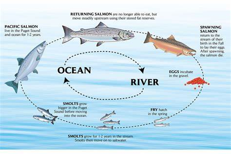

Shelton, WA
The previous video of the "salmon crossing the street" was very popular. Many friends asked if we caught any. The answer was NO.
Salmon hatch from freshwater eggs and swim into the sea when they grow up. Salmon change to adapt to the salt of sea water.
Salmon usually stay in the deep sea for 1-5 years, when they grow up and find a mate. At which point they return to the place where they were born to lay eggs.
Once salmon enter the freshwater river from the sea, they do not eat and swim to their birthplace on their own support.
Find a suitable place, the mother salmon will lay eggs. The father salmon will fertilize the eggs. Then the two fish stand guard at the place of the eggs until they are both dead.
We used to see this by the river. Very impressed!
Spring is when the baby salmon enter the sea, and autumn is when the salmon swim back to lay their eggs. Once in the fresh water, the salmon does not eat. So the salmon at this time is not tasty and nutritious. Recommend not to catch them at this time.

×